No Sound Is Heard From Speaker(s) (Display Is Normal) (With Navigation)
No sound is heard from speaker(s) (display is normal) (with navigation)NOTE:
- Set the fader and balance positions to the center.
- Before performing symptom troubleshooting, do the power switch will not turn ON troubleshooting.
1. Check that the volume button is not set to min level.
Is it at MIN level?
YES - Raise the volume level, and recheck the function.
NO - Go to step 2.
2. Check the NAVIGATION VOICE MUTE COMMAND.
Is the NAVIGATION MUTE MODE set?
YES - Cancel the NAVIGATION VOICE MUTE COMMAND by pressing the voice command BACK button, and recheck the function.
NO - Go to step 3.
3. Check to see if there is a specific speaker that has no sound.
Is there a specific speaker with no sound?
YES - Go to step 4.
NO - Go to step 7.
4. Turn the ignition switch OFF.
5. Check the speaker with no sound for any damage.
Is there any damage?
YES - Substitute the speaker and recheck.
NO - Go to step 6.
6. Remove the speaker(s) with no sound, and disconnect its connector.
7. Check the speaker 2P connector for a loose or poor connection.
Reconnect the speaker 2P connector and recheck the symptom; does it still fail?
YES - Go to step 8.
NO - Operation is normal.
8. Measure the resistance between the No.1 and No.2 terminals of the speaker connector.
Is there about 4 ohms?
YES
- With premium sound system: Go to step 13.
- Without premium sound system: Go to step 9
NO - Faulty speaker(s).
9. Remove the navigation unit. Disconnect navigation unit connector A (17P).
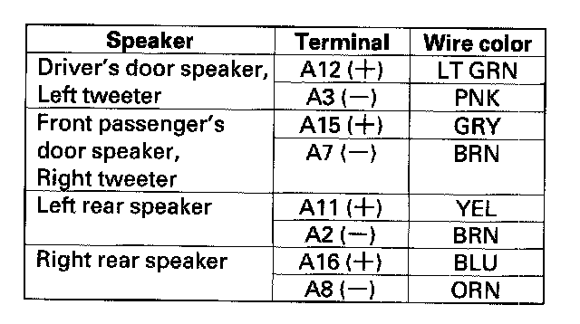
10. Measure the resistance between following terminals of navigation unit connector A (17P) according to the table.
Is there about 4 ohms?
YES - Go to step 11.
NO - Repair short in the wires between the navigation unit and speaker.
11. Disconnect the speaker 2P connector.
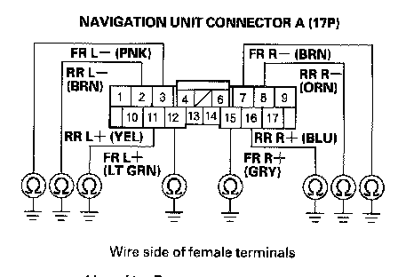
12. Check navigation unit connector A (17P) terminals No.2, 3, 7, 8,11,12,15, and 16 individually for continuity to body ground.
Is there continuity?
YES - Repair short to body ground in the wire between the navigation unit and speaker.
NO - Substitute a known-good navigation unit and recheck. If the symptom/indication goes away, replace the original navigation unit.
13. Disconnect stereo amplifier connector A (20P), and connector B (14P).
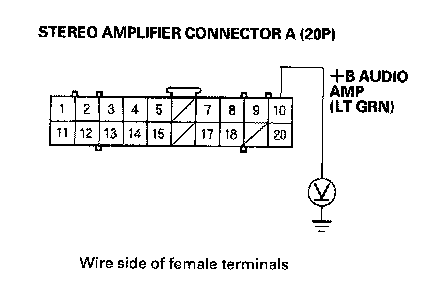
14. Measure the voltage between stereo amplifier connector A (20P) No. 10 terminal and body ground.
Is there battery voltage?
YES - Go to step 15.
NO - '07 model: Repair open in the wire between No. 17 (15 A) fuse in the under-hood fuse/relay box and stereo amplifier connector A (20P) No. 10 terminal.
15. Turn the ignition switch ON (II), and push the PWR button on the navigation unit.
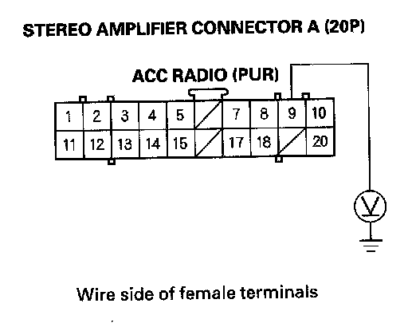
16. Measure the voltage between stereo amplifier connector A (20P) No.9 terminal and body ground.
Is there battery voltage?
YES - Go to step 17.
NO - Repair open in the wire between No. 35 (7.5 A) fuse in the under-dash fuse/relay box and stereo amplifier connector A (20P) No.9 terminal.
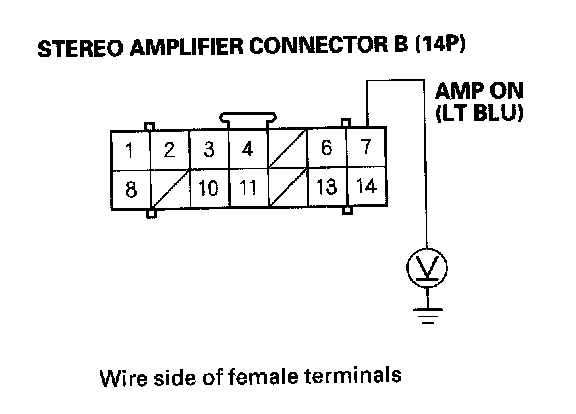
17. Measure the voltage between stereo amplifier connector B (14P) No.7 terminal and body ground.
Is there battery voltage?
YES - Go to step 18.
NO - Repair open in the wire between the stereo amplifier connector B (14P) No.7 terminal and navigation unit connector B (22P) No. 20 terminal.
18. Reconnect stereo amplifier connector A (20P), and connector B (14P).
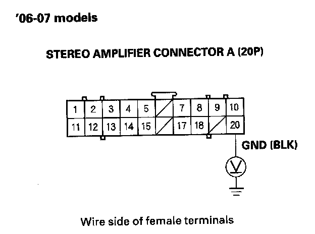
19. Measure the voltage between stereo amplifier connector A (20P) No. 20 terminal and body ground, and between stereo amplifier connector B (14P) No. 14 terminal and body ground.
Is there less than 0.1 V both terminals?
YES - Go to step 20.
NO - Repair open in the wire between stereo amplifier connector A (20P) No. 20 terminal or connector B (14P) No. 14 terminal and body ground, 2-door model (G505), 4-door model (G601).
20. Disconnect stereo amplifier connector A (20P), and connector B (14P).
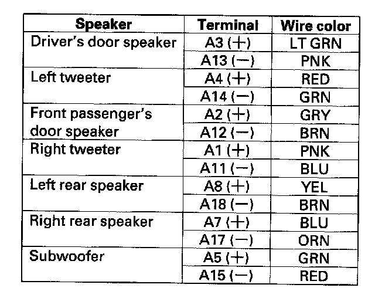
21. Measure the resistance between the following terminals of stereo amplifier connector A (20P) according to the table.
Is there about 4 ohms?
YES - Go to step 22.
NO - Repair short in the wires between the stereo amplifier and speaker.
22. Disconnect the 2P connector(s) to the speaker(s).
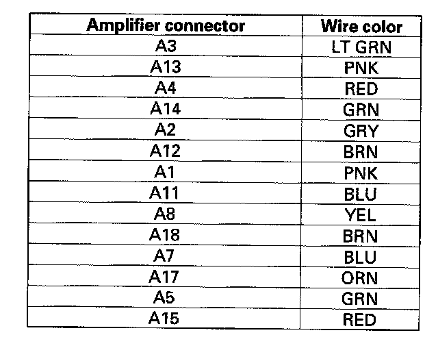
23. Check for continuity between stereo amplifier connector A (20P) and body ground according to the table.
Is there continuity?
YES - Repair short to body ground in the wire between the navigation unit and the speaker.
NO
- 2-door model: Go to step 24.
- 4-door model: Go to step 27.
24. Disconnect navigation unit connector A (17P).
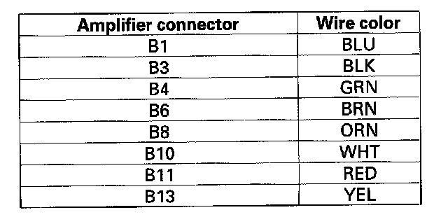
25. Check for continuity between stereo amplifier connector B (14P) and body ground according to the table. Then check for continuity between the same terminals listed in the table and stereo amplifier connector B (14P) NO.2 terminal (the harness shield).
Is there continuity?
YES - Repair short in the wire between the stereo amplifier and the navigation unit. Replace the appropriate shielded harness.
NO - Go to step 26.
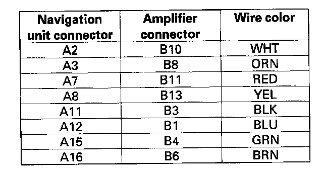
26. Check for continuity between navigation unit connector A and stereo amplifier connector B according to the table.
Is there continuity?
YES - Substitute a known-good navigation unit and recheck. If the symptom/indication goes away, replace the original navigation unit. If symptom is still present, substitute a known-good stereo amplifier and recheck. If the symptom/indication goes away, replace the original stereo amplifier.
NO - Repair open in the wire between the navigation unit and stereo amplifier.
27. Disconnect navigation unit connector A (17P).
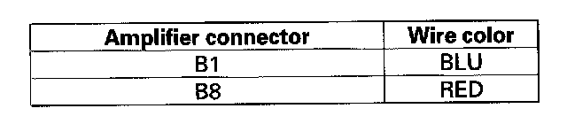
28. Check for continuity between stereo amplifier connector B (14P) and body ground according to the table. Then check for continuity between the same terminals listed in the table and stereo amplifier connector B (14P) No.2 terminal (the harness shield).
Is there continuity?
YES - Repair short in the wire between the stereo amplifier and the navigation unit. Replace the appropriate shielded harness.
NO - Go to step 29.
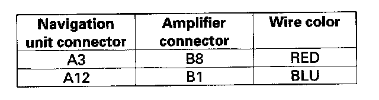
29. Check for continuity between navigation unit connector A and stereo amplifier connector B according to the table.
Is there continuity?
YES - Go to step 30.
NO - Repair open in the wire between the navigation unit and stereo amplifier.
30. Check for continuity between stereo amplifier connector B (14P) and body ground according to the table. Then check for continuity between the same terminals listed in the table and stereo amplifier connector B (14P) No.5 terminal (the harness shield).
Is there continuity?
YES - Repair short in the wire between the stereo amplifier and the navigation unit. Replace the appropriate shielded harness.
NO - Go to step 31.
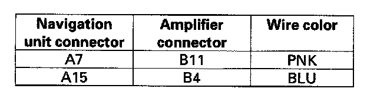
31. Check for continuity between navigation unit connector A and stereo amplifier connector B according to the table.
Is there continuity?
YES - Go to step 32.
NO - Repair open in the wire between the navigation unit and stereo amplifier.
32. Check for continuity between stereo amplifier connector B (14P) and body ground according to the table. Then check for continuity between the same terminals listed in the table and stereo amplifier connector B (14P) No.9 terminal (the harness shield).
Is there continuity?
YES - Repair short in the wire between the stereo amplifier and the navigation unit. Replace the appropriate shielded harness.
NO - Go to step 33.
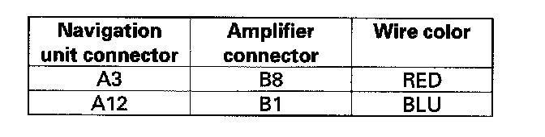
33. Check for continuity between navigation unit connector A and stereo amplifier connector B according to the table.
Is there continuity?
YES - Go to step 34.
NO - Repair open in the wire between the navigation unit and stereo amplifier.
34. Check for continuity between stereo amplifier connector B (14P) and body ground according to the table. Then check for continuity between the same terminals listed in the table and stereo amplifier connector B (14P) No. 12 terminal (the harness shield).
Is there continuity?
YES - Repair short in the wire between the stereo amplifier and the navigation unit. Replace the appropriate shielded harness.
NO - Go to step 35.
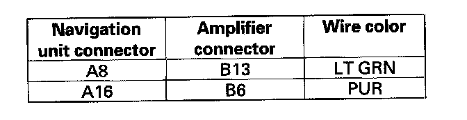
35. Check for continuity between navigation unit connector A and stereo amplifier connector B according to the table.
Is there continuity?
YES - Substitute a known-good navigation unit and recheck. If the symptom/indication goes away, replace the original navigation unit. If the symptom is still present, substitute a known-good stereo amplifier and recheck. If the symptom/indication goes away, replace the original stereo amplifier.
NO - Repair open in the wire between the navigation unit and stereo amplifier.